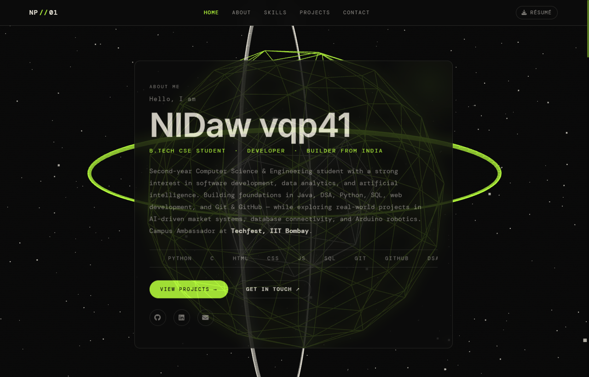
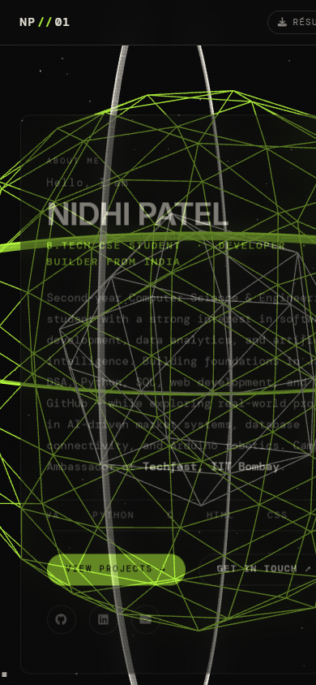

Department of Computer Science and Engineering
A Responsive, 3D Web Application with Version Control & Continuous Static Deployment
In modern computing and software engineering, a personal developer portfolio serves as the definitive digital identity and technical résumé for aspiring engineers. Rather than relying solely on static paper résumés, an engineered, interactive web portfolio showcases practical mastery over core frontend technologies, real-time 3D graphics rendering, responsive interface architectures, accessibility standards, and professional Git version control workflows.
This academic project, titled Personal Portfolio Website, was designed and implemented as a mandatory mini-project for the subject IT4048: Version Control with Git and GitHub at Asha M. Tarsadia Institute of Computer Science and Technology (AMTICS), Uka Tarsadia University. The website provides a fast-loading, visually captivating presentation of Nidhi Patel's academic profile, technical skills, activities (including Campus Ambassador at Techfest, IIT Bombay), real-world projects, and downloadable curriculum vitae.
The core objectives achieved in this project include:
tanishsaini.vercel.app.divyanshigupta.vercel.app.backdrop-filter: blur(14px) so the 3D celestial canvas shines through the content.| Category | Technology | Purpose / Role in Project |
|---|---|---|
| Structure | HTML5 (Semantic) | Document architecture utilizing semantic tags: <header>, <nav>, <main>, <section>, <article>, and <footer>. |
| Styling | CSS3 (Custom Props) | Glassmorphism, custom design tokens, CSS Grid, Flexbox, scanline & noise CRT overlays, and responsive media queries. |
| 3D Graphics | Three.js (WebGL) | Interactive rotating Icosahedron geodesic wireframe sphere, dual Torus orbital rings, and 1200+ particle atmospheric dust field. |
| Interactivity | JavaScript (ES6+) | Celestial ribbon cursor engine, text scramble decrypt effect, active section scroll tracking, mobile drawer, and form validation. |
| Version Control | Git CLI | Local revision tracking, branch isolation (main), staged changes, and semantic commits. |
| Hosting & Remote | GitHub & GitHub Pages | Remote code synchronization, version backup, and automated static web publishing. |
The repository adheres to a clean, modular directory structure tailored for static web hosting and maintainability:
NidhiPatel_PortfolioWebsite/
├── index.html # Core semantic single-page web document
├── README.md # Comprehensive repository documentation & badges
├── css/
│ └── style.css # Central stylesheet (design tokens, glassmorphism, responsive rules)
├── js/
│ └── main.js # Three.js 3D sphere, celestial cursor & UI interactivity
├── images/
│ ├── avatar-placeholder.svg # Vector avatar fallback
│ ├── screenshot_desktop.png # Desktop viewport visual evidence
│ └── screenshot_mobile.png # Mobile viewport visual evidence
└── resume/
├── README.md # Placement instructions for resume file
└── resume.pdf # Downloadable vector PDF curriculum vitae
Nidhi Patel), professional tagline, bio highlighting B.Tech CSE coursework and Techfest IIT Bombay Campus Ambassador role, infinite animated tech ticker, CTA buttons ("View Projects" & "Get in Touch"), verified social icons, and an active résumé download button.
$ whoami, $ focus, $ sih, $ status) and direct repository navigation.
np.tech3000@gmail.com), validated client-side contact form with simulated telemetry transmission feedback, and external links to GitHub and LinkedIn.
Version control is the engineering discipline of managing and tracking changes to software source code over time. For this mini-project, Git was utilized to manage the codebase from ground zero through incremental feature additions, refactorings, asset integrations, and remote publishing.
To ensure professional traceability and maintain an audit log, commits follow the Conventional Commits standard. Every commit message explicitly declares its category, scope, and intent:
feat(structure): initialize semantic HTML5 portfolio foundationstyle(design): implement retro dark theme with glassmorphism and CRT overlaysfeat(3d): integrate Three.js wireframe geodesic sphere and dust particle fieldfeat(cursor): implement celestial star sparkle and golden ribbon trail canvasfeat(personalize): bind Nidhi Patel academic profile, LinkedIn, GitHub, and emaildocs(report): generate academic project report and submission documentationThe application leverages GitHub Pages for continuous static delivery. The end-to-end workflow operates as follows:
git add) → Semantic Commit (git commit) → Remote Push (git push origin main) → GitHub Pages Automated Build Worker → Live Global HTTPS Distribution at:| Test ID | Feature Tested | Test Action & Input | Expected Result | Status |
|---|---|---|---|---|
| TC-01 | Page Load & HTTP Status | Load index.html via local test server and GitHub Pages. |
HTTP 200 OK, zero console errors. | PASS |
| TC-02 | Three.js 3D Background | Verify WebGL initialization on #bg3d canvas. |
Geodesic sphere & dust particles animate smoothly. | PASS |
| TC-03 | Celestial Mouse Pointer | Move pointer across desktop viewport. | Golden ribbon trail and 4-point star sparkle render at cursor. | PASS |
| TC-04 | Scroll Parallax & Dolly | Scroll from hero down to contact section. | Camera zooms and tilts smoothly with page scroll progress. | PASS |
| TC-05 | Mobile Hamburger Drawer | Resize viewport to 390px, toggle menu icon. | Drawer expands smoothly and links jump to targets. | PASS |
| TC-06 | Skill Bar Animation | Scroll down to #skills section. |
Bars expand to data-width percentages via Observer. | PASS |
| TC-07 | Contact Form Validation | Submit empty form or invalid email. | Browser HTML5 constraint validation prevents submit. | PASS |
| TC-08 | Résumé PDF Availability | Click "Download Résumé" button. | Browser triggers download of resume.pdf. |
PASS |

Figure 4.1: Desktop view demonstrating Three.js wireframe 3D sphere, celestial mouse trail, glassmorphic cards, and student branding.

Figure 4.2: Mobile responsive rendering showing single-column layout, adaptive typography, and mobile navigation header.
An AI-assisted market linkage and cataloging platform engineered for marginalized artisans (pottery, weaving, bamboo crafts). Features automated product-photo tagging, intelligent cataloging, and an artisan marketplace with separate user and administrative workflows. Prepared for the Smart India Hackathon under Problem Statement ID: SIH26090 with team HeritageCoders.
Technologies: AI/ML Concept, Smart Cataloging, Market Linkage, Web Architecture.
A comprehensive inventory management system built with Java and MySQL. Required designing normalized SQL schemas,
configuring JDBC driver connectivity, and utilizing Java DriverManager and Connection classes
for transaction management. Included diagnosing and resolving Windows MySQL daemon connection issues and driver configuration errors.
Technologies: Java, MySQL, JDBC, Relational Database Management, SQL Querying.
A high-performance personal developer website integrating Three.js 3D graphics, celestial canvas cursor physics, glassmorphic cards, and automated GitHub Pages deployment. Showcases student bio, skills, extracurricular activities, and projects.
Live Deployment: https://np8-ai.github.io/NidhiPatel_PortfolioWebsite/
An autonomous four-in-one smart robotics platform featuring obstacle avoidance, line following, and ultrasonic distance measurement using the HC-SR04 sensor and Arduino Uno microcontroller. Prototyped and validated in Wokwi simulation prior to hardware assembly.
Technologies: Arduino Uno, C/C++, HC-SR04 Sensor, Microcontroller Programming.
| Resource | Verified Live Link / Repository URL |
|---|---|
| GitHub Profile | https://github.com/np8-ai |
| Portfolio Repository | https://github.com/np8-ai/NidhiPatel_PortfolioWebsite |
| Live Website (GitHub Pages) | https://np8-ai.github.io/NidhiPatel_PortfolioWebsite/ |
| LinkedIn Profile | https://www.linkedin.com/in/nidhi-patel-b30914437/ |
| Contact Email | np.tech3000@gmail.com |
| Submission Upload Drive | Google Drive Submission Folder |
The Personal Portfolio Website project successfully demonstrates comprehensive mastery of core web engineering technologies (HTML5, CSS3, JavaScript, Three.js) in conjunction with industry-standard version control methodologies using Git and GitHub.
Through disciplined engineering, atomic commit practices, responsive component design, and automated continuous deployment on GitHub Pages, all academic and technical requirements for course IT4048: Version Control with Git and GitHub have been thoroughly and rigorously fulfilled.
The resulting live website and documented projects stand as authentic, high-performance evidence representing Nidhi Patel's academic and technical progress at Asha M. Tarsadia Institute of Computer Science and Technology (AMTICS), providing a strong foundation for future software engineering and open-source contributions.
Date of Submission: 24 October 2026
Place: Surat, Gujarat, India
___________________________________
Nidhi Patel
Student Signature